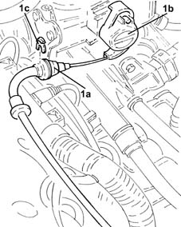
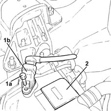
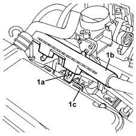
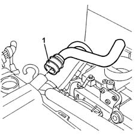
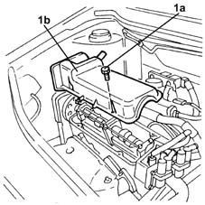
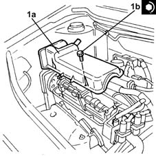

1016A20 single cam cover - r + r and replace gasket
- Path
- Procedures > 10 ENGINE > 1016 CYLINDER HEAD/S > 1016A cam covers > 1016A20 single cam cover - r + r and replace gasket
- Kind
- repair procedure (removal / refitting; the operation number is the code)
- Applies to
- engines: 1.2 8v; all production periods
- Interactive page
- https://sloeber94.github.io/elrnDB-lYpsln/en/#/2428861
Applies to: engines: 1.2 8v; all production periods
 Removing
Removing
 Refitting
RefittingProceed with removal 1048A10 air cleaner filtering element - replace .
1. Disconnect the accelerator cable (1a) from throttle valve drive (1b) by releasing from the mounting bracket (1c) and move aside.

Applies to: engines: 1.2 8v; all production periods
1. Undo bolts (1a) and move cam angle sensor (1b) aside.
2. Remove the engine oil filler plug.

Applies to: engines: 1.2 8v; all production periods
1. Undo retaining clip (1a) and disconnect injector electrical wiring channel (1b) from slots (1c) on the cam cover.

Applies to: engines: 1.2 8v; all production periods
1. Disconnect the oil vapour recovery pipe from the cam cover and move aside.

Applies to: engines: 1.2 8v; all production periods
1. Undo the bolts (1a) and remove the tappet cover (1b).
Remove the gasket.

Applies to: engines: 1.2 8v; all production periods
Refitting
RemovingPlace a new gasket in the housing.
1. Refit the cam cover (1a) and tighten the bolts (1b) to the recommended torque.
 | Fastening | Component | Ø | Value (daNm) |
|---|---|---|---|---|
1b | Bolt | CAM COVER | M6 | (Cylinder head side) 1.0 |

Applies to: engines: 1.2 8v; all production periods
Connect the oil vapour recovery pipe to the tappet cover.
Secure the injector wiring duct to the slots on the cam cover.
Refit the engine oil filler plug.
Place the cam angle sensor back in its housing and fix it using the bolt.
Refit the accelerator cable and secure to the mounting bracket.
Connect the accelerator cable to the throttle valve.
Proceed with refitting 1068A10 accelerator pedal control - check, adjust if necessary and lubricate .
Proceed with refitting 1048A10 air cleaner filtering element - replace .
Topics linked from this page (2)
- 1048A10 air cleaner filtering element - replace
- 1068A10 accelerator pedal control - check, adjust if necessary and lubricate